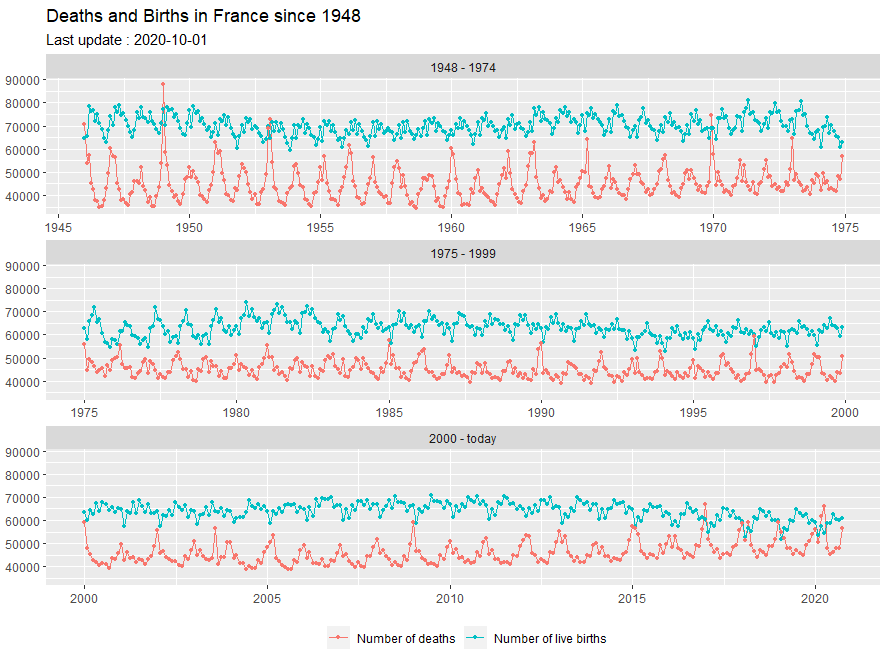

library(insee) library(tidyverse) insee_dataset = get_dataset_list() list_idbank_selected = get_idbank_list("DECES-MORTALITE", "NAISSANCES-FECONDITE") %>% filter(FREQ == "M") %>% #monthly filter(REF_AREA == "FM") %>% #metropolitan territory filter(DEMOGRAPHIE %in% c("NAISS", "DECES")) idbank_selected = list_idbank_selected %>% pull(idbank) data = get_insee_idbank(idbank_selected) %>% split_title() %>% mutate(period = case_when(DATE < "1975-01-01" ~ "1948 - 1974", DATE >= "1975-01-01" & DATE < "2000-01-01" ~ "1975 - 1999", DATE >= "2000-01-01" ~ "2000 - today" )) x_dates = seq.Date(from = as.Date("1940-01-01"), to = Sys.Date(), by = "5 years") last_date = data %>% pull(DATE) %>% max() ggplot(data, aes(x = DATE, y = OBS_VALUE, colour = TITLE_EN2)) + facet_wrap(~period, scales = "free_x", ncol = 1) + geom_line() + geom_point(size = 0.9) + ggtitle("Deaths and Births in France since 1948") + labs(subtitle = sprintf("Last update : %s", last_date)) + scale_x_date(breaks = x_dates, date_labels = "%Y") + theme( legend.position = "bottom", legend.title = element_blank(), axis.title.x = element_blank(), axis.title.y = element_blank() )